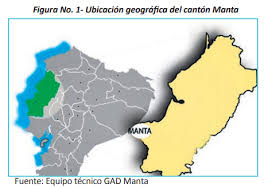
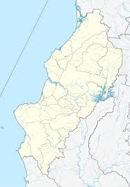

| FECHAS DONDE MANTA ES MAS VISITADO | Poblacion | Superficie | Elevacion | Coordenadas |
|---|---|---|---|---|
| Son junio, julio y agosto, debido a las temperaturas más refrescantes y menos lluvia. |
250.000 personas hasta el 2022 segun datos oficiales. |
306 km² | 6 m | 0°57′00″S 80°42′58″O / -0.95002222222222, -80.7162 |
|  |

Manta limita, al norte, sur, al oeste con el océano pacífico,
al sur con el Cantón Montecristi, y al este los Cantones Montecristi y Jaramijó,
su ubicación es estratégica para el ingreso de todo tipo de embarcaciones, ya que
se encuentra en el centro del litoral ecuatoriano.
*En Manta el clima es tropical, cálido, seco, fresco;
el cambio climático está supeditado a la presencia de la
corriente fría de Humboldt y el fenómeno de El Niño.
*Tiene una temperatura promedio de 28° C, la que es
variable tanto en el verano como en el invierno; en la épocab
de invierno sube más de 30° C, mientras que en el verano en
determinadas épocas provoca olas de frío donde la temperatura baja a 20°
C y 22° C por las noches o madrugadas.
*Su altitud es de cinco metros sobre el nivel del mar,
le dan preferencia para ser acogidas como prioridad vacacional.
*El cantón Manta tiene cinco Parroquias Urbanas, dos rurales; y, pintorescos recintos.
Los Recintos de Manta son los siguientes:
San Juan, La Travesía de Jome; Los tres Pacoches
– de afuera,del centro y de arriba o de adentro; El Aromo; Ligüique; Las Piñas; Santa Rosa.